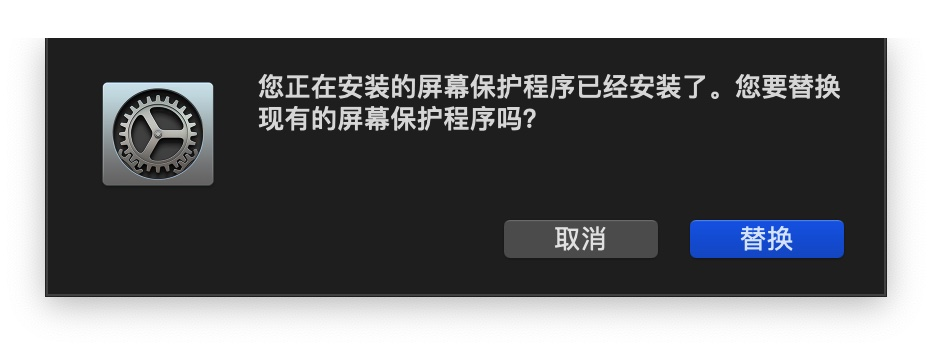
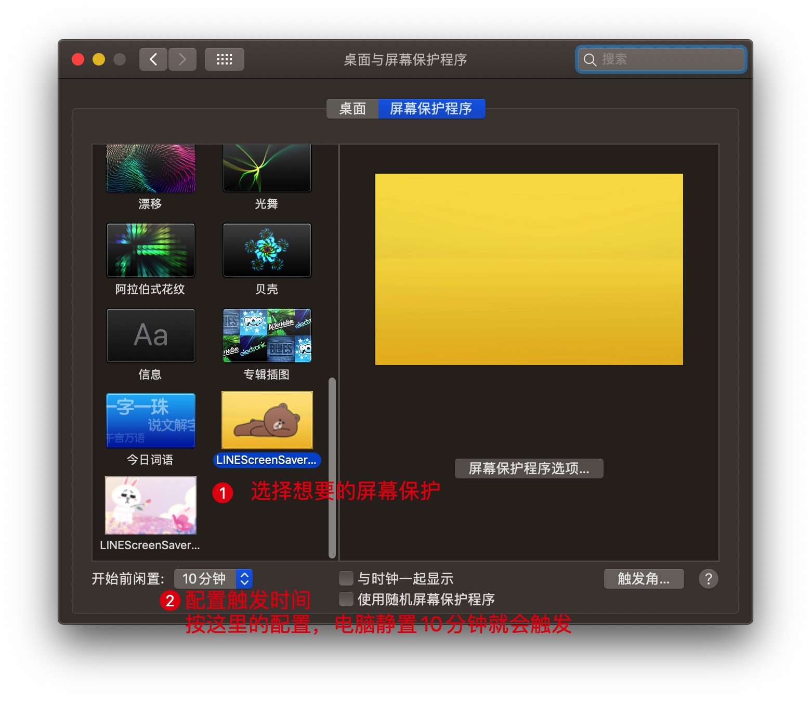
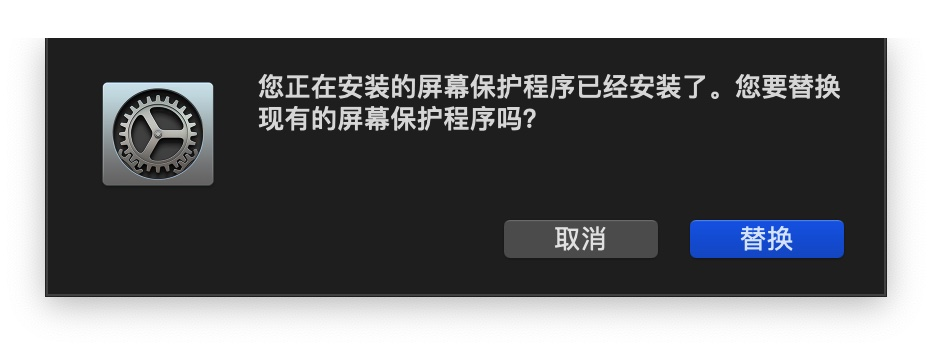
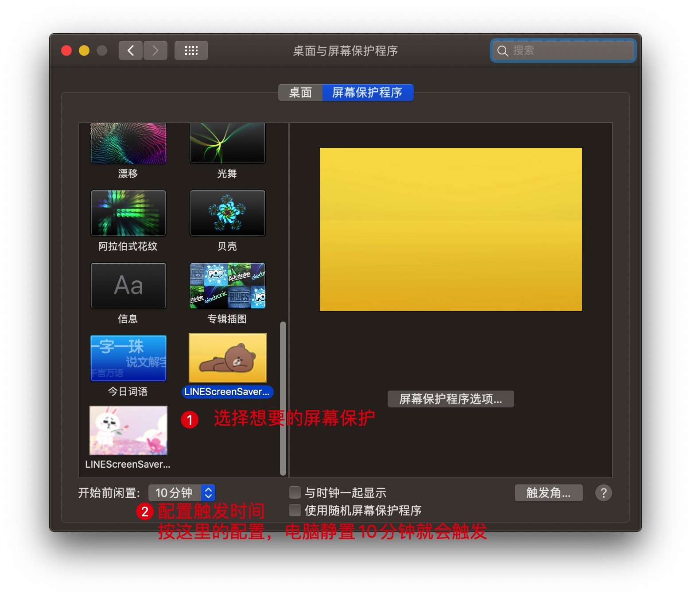

简略教程
按照操作系统下载对应的安装包，进行安装即可。
详细教程
Windows平台
系统之家：Win10怎么设置屏幕保护？Win10设置屏幕保护的方法
macOS
下载后双击zip压缩包解压，再双击解压出来的LINEScreenSaverCony.saver屏保程序，会自动弹出安装。

安装完之后会提示你选择屏保。

想要更换屏保，可以在桌面点击右键，选择“更改桌面背景”，即可进入安装时弹出的页面。
手机端与Linux系统
手机端与Linux系统没有这个屏幕保护程序可以使用。
按照操作系统下载对应的安装包，进行安装即可。
系统之家：Win10怎么设置屏幕保护？Win10设置屏幕保护的方法
下载后双击zip压缩包解压，再双击解压出来的LINEScreenSaverCony.saver屏保程序，会自动弹出安装。

安装完之后会提示你选择屏保。

想要更换屏保，可以在桌面点击右键，选择“更改桌面背景”，即可进入安装时弹出的页面。
手机端与Linux系统没有这个屏幕保护程序可以使用。